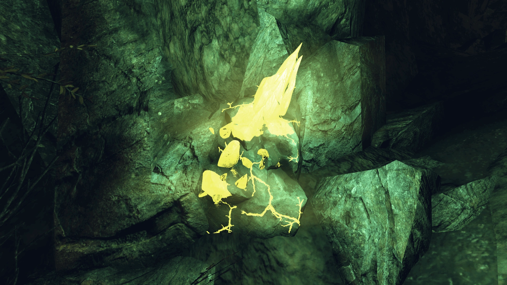
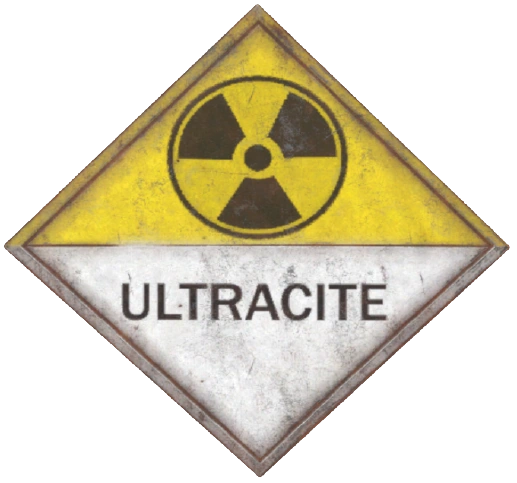
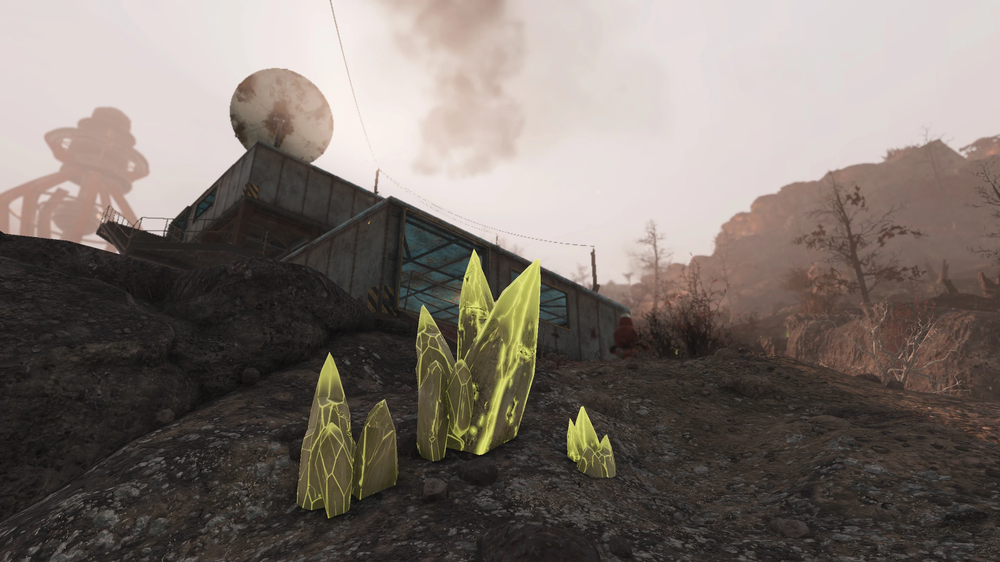
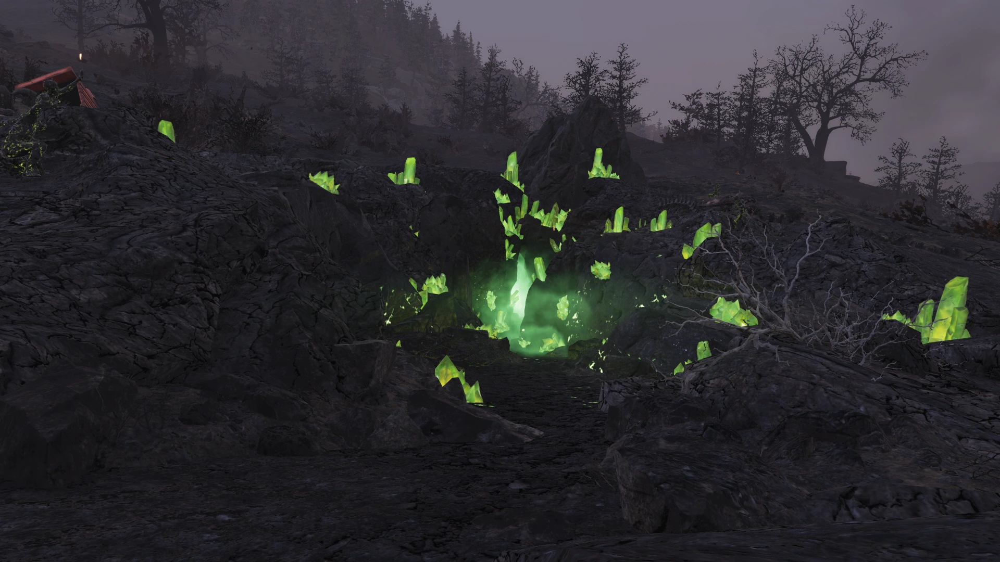
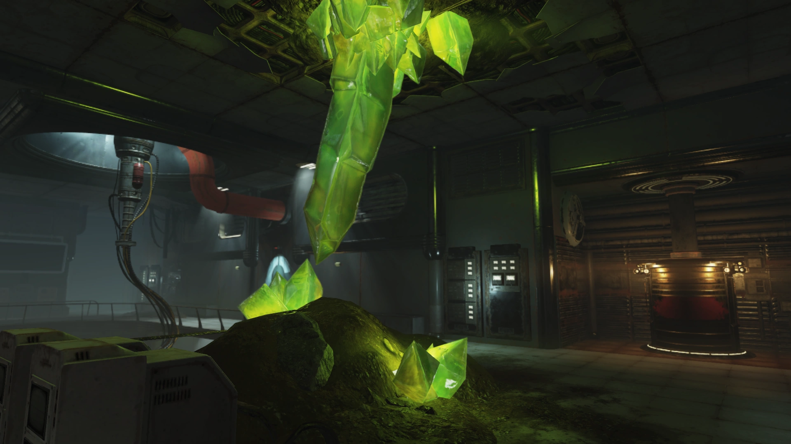
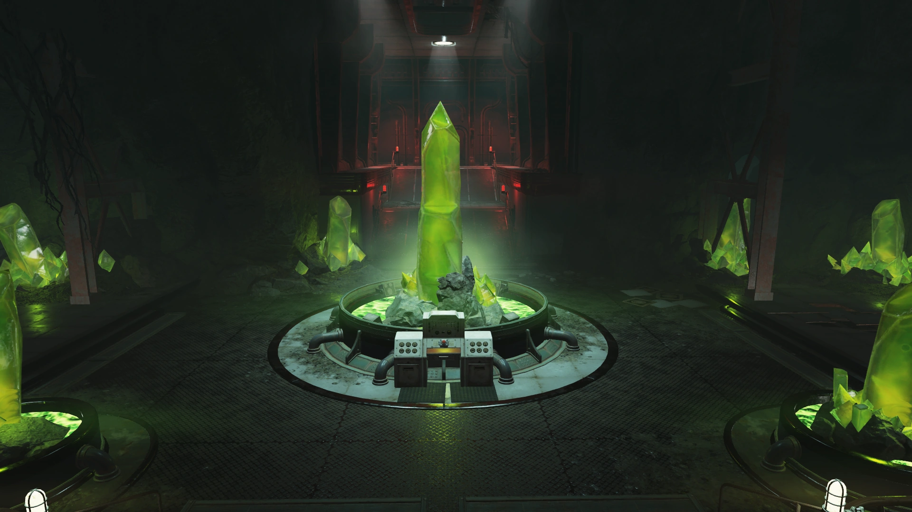
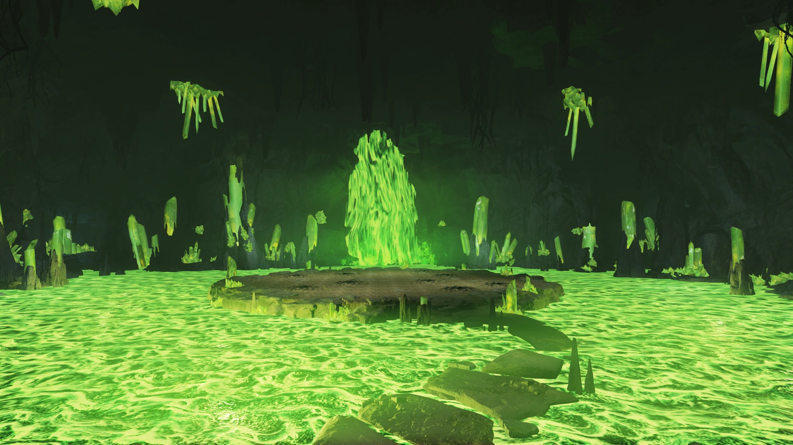

Ultracite
ウルトラサイト
概要
ウルトラサイトは、Fallout 76におけるクラフト素材である。
背景
ウルトラサイトは、アトミック・マイニング・サービス（AMS）がアパラチアの土壌の下で発見した、放射性のガラス状鉱石である。
AMSは核爆発を用いてかつてないほど深く掘削することで、以前放棄された炭鉱を新たな繁栄の源に変えることができた。
その起源はAMSの科学者たちを当惑させたが、その特性は謎ではなかった——ウルトラサイトは驚異的に強力なエネルギー源だった。

適切に扱えば、産業用機械を数十年にわたって稼働させ続けるのに十分な電力を供給できた。
そうでなければ、その強力さが原子炉を溶かし、メルトダウンを引き起こす可能性があった。
AMSはウルトラサイトこそがアメリカ全土の未来のエネルギー源であると確信しており、供給を掌握することで市場における覇権を握ろうとしていた。
当初、AMSは地域的に事業を開始し、ワトガに電力を供給し、アパラチアの採掘市場における二大企業——ホーンライト・インダストリアルとガラハン鉱業会社——およびエネルギー複合企業ポセイドン・エネルギーに技術をリースした。
ウラニウムと同様の扱いで取り扱っていた。
契約には条件が付いていた。エクスカベーター・パワーアーマーに電力を供給するために、ガラハンはAMSの技術に10年間のコミットメントを行わなければならなかった。
さらに、ポセイドン・エネルギー発電所WV-06はウルトラサイト燃料を燃焼するよう改修された。
AMSは市場で支配的な地位を確保しつつ、ウルトラサイトの全国的な普及に対する障害の除去にも取り組んだ。
劣化ウルトラサイトは通常の素材と接触すると腐食反応を起こし、両方の素材を溶かしてしまうため、二つの素材の分離と封じ込めに細心の注意が必要だった。
しかし、その合併症は最大の問題に比べれば二次的なものに過ぎなかった——AMSはウルトラサイトの生成過程を理解していなかったのだ。
これにより、失敗と判定された坑道が突然ウルトラサイトの鉱脈を形成したり、以前の予想を超えて成長・拡大するという状況が発生した。
ウェルチの町の近くの9番坑道がその例だった。
ウルトラサイトの鉱脈は急速に発達し、坑道内だけでなく町の中にまで出現した。
独占を維持するため、AMSは12時間以内に財産権を確保し、町の全住民を強制的に退去させた。
この動きが、すでに怒っていた鉱夫たちを過激化させた。

ウルトラサイトの性質はエンクレイヴにも注目された。
エンクレイヴはダミー会社のレイヴンLLCを通じてAMSの鉱山の一つ（グリーミング・デプス）を買収し、プロジェクト・ヴァルカンの一環として鉱物の研究を開始した。
特徴
スコーチ対策の武器、ウルトラサイト・パワーアーマー、その他の強力な武器・防具のクラフトに使用される非常に希少な素材である。
ウルトラサイトと劣化ウルトラサイトは互いの接触に耐えられず、接触すると両方のサンプルが爆発的に溶融する。
AMSは実験を通じてこの性質を発見し、レスポンダーズは後にハンク・マディガンを通じてこの情報を発見し活用した。
スコーチ病が生体組織内にウルトラサイトの破片を形成させることが証明されると、レスポンダーズはこの機会を利用して武器化に着手した。
劣化ウルトラサイトを発射するよう改造された銃は、スコーチ・クリーチャーに対して特に効果的だった。
ワールド内ではライムグリーンまたは黄緑色に光る宝石として出現するが、アイテムそのものは暗い緑青色で表示される。
クラフト
ウルトラサイトはクラフトシステムにおけるウルトラサイト・スクラップの表現である。
使用可能なウルトラサイトの量は、インベントリ、スタッシュ、スクラップボックスに保管されているウルトラサイト・スクラップの量に直結する。
ウルトラサイトの利用量を増やすには、より多くのウルトラサイト・スクラップを入手する必要がある。
ホロテープ・メモ
ウェルチの崖の横から突き出た開いた棺の中、骸骨の横で発見
あなたがたの住居はAMSの所有地の上にあります。
15秒以内に退去してください。
従わない場合、我々は実力で排除する権利を有しています。
男：あいつら出てこなさそうだな、おい。
AMSエージェント：あなたには関係のないことです。お引き取りください。
男：お前ら企業の犬は俺たちの仕事を奪った。
尊厳も奪った。
今度は家まで取ろうってのか？ 十分に関係あると思うがな。
AMSエージェント：もう一度だけ言います。家に戻りなさい。
困っているのはカミンスキ家だけです……今のところは。
男：そこが間違ってるんだよ、坊や。
（口笛。銃声が鳴り響く）
AMS本社のレセプション端末に録音されている
俺の後にここを通るファイア・ブリーザーの誰かに伝える。
数え切れないほどのロボットとタレットをかわさなきゃならなかったが、探していたものを見つけた。
アトミック・マイニング・サービスはウルトラサイトの王者だった。
このオフィスにラボがあった。
連中が俺たちを助ける方法を見つけていたかもしれないと思う——たとえ本人たちがそれに気づいていなくてもな。
燃料を使い切ると、後に塊が残るんだ。
この劣化ウルトラサイトは通常のやつとは相性が悪い。
腐食性になる。
AMSは廃棄と封じ込めを考えていた。
俺は武器として考えている。
スコーチどもはウルトラサイトの塊を体に突っ込んで歩き回ってる。
劣化ウルトラサイトを発射するよう銃を改造してみよう。
あのクソどもが溶けるか見てやる。
チャールストン・ヘラルド紙の記事。チャールストン・ヘラルド・ビルのオーバービーのオフィス外、大テーブルの上
暴動や労働争議を「鎮圧」するために使用される武装した「警備要員」チームの報告は、本紙が報じてきたほぼ日常的な出来事である。
残念ながら、新たな最低記録が達成されたと言わざるを得ない。
AMSが初めてウェスト・ヴァージニアに来た時、彼らは地域の救世主として称賛された。
古い鉱山にさらに深く掘り下げる新しい方法をもたらしたのだ。
その方法に核爆薬の爆発が含まれていたことも、炭鉱地帯に慣れ親しんだリスクに慣れきった硬骨の鉱山コミュニティを怯ませることはなかった。
しかしAMSは到着するや否やプロジェクトを放棄し、「技術的失敗」を理由に挙げた。
雇用は再び枯渇した。
地域はさらに深い貧困に沈んだ。
それだけで十分な被害だと思うだろうが、AMSはまだ終わっていなかった。
夜の盗人のごとく、AMSは突然ウェルチの町に急襲し、土地の資源権を主張した。
ウェルチの住民が暮らしている住宅を含めてだ。
当然、町はこの家屋の強奪に抵抗し——そこでAMSの今や悪名高い「警備要員」が投入された。
なぜAMSはウェルチを欲するのか？ AMSはコメントを出していない。
本紙の記者はAMSのロゴを身につけた武装した男たちに町から護送された。
関連項目
- ウルトラサイト鉱石
- ウルトラサイト・スクラップ
- ウルトラサイト供給箱
登場作品
ウルトラサイトはFallout 76にのみ登場する。
ギャラリー





ウルトラサイトはFallout 76のロアにおいて極めて重要な素材です。
AMSが核爆発を使って発見したというダイナミックな経緯、劣化状態では通常の素材と激しく反応するという性質、そしてスコーチ病との密接な関連——どれも物語に深みを加えています。
特にハンク・マディガンが「AMSが廃棄を考えていた劣化ウルトラサイトを武器にする」と発想転換する場面がかっこいいですね。
カミンスキ家の立退きホロテープは、企業の暴力とそれに対する鉱夫たちの抵抗を生々しく伝えていて、積灰の山の暗い歴史を象徴しています。
この記事は Nukapedia (Fallout Wiki)の「Ultracite」の記事を日本語に翻訳し再構成したものです。
原文は Creative Commons Attribution-ShareAlike (CC BY-SA) ライセンスのもとで利用しています。
© Bethesda Softworks LLC. Fallout およびすべての関連ロゴ・名称は Bethesda Softworks LLC の登録商標です。
COMMENTS